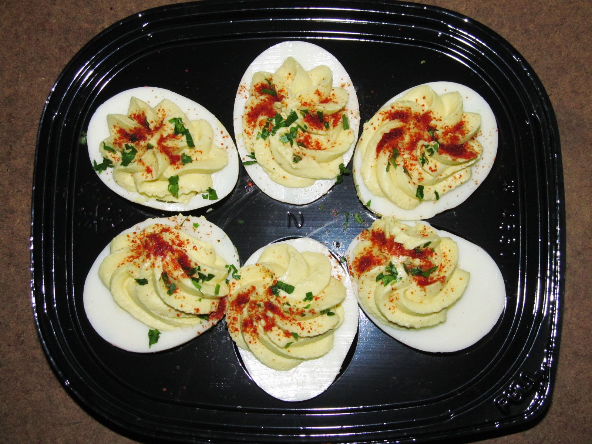

This recipe is adapted from "U.S.A. Cookbook," written by Sheila Lukins, and found on https://cooking.nytimes.com/recipes/6866-classic-deviled-eggs
Recipe 1
Recipe 2
Recipe 3
Recipe 4

Photo by: Willis Lam, CC BY-SA 4.0 https://creativecommons.org/licenses/by-sa/4.0, via Wikimedia Commons
Rate This Recipe
Conversion
=
Ingredients
6 large eggs
1 teaspoon Dijon mustard
1 to 2 dashes Tabasco sauce, to taste
¼ teaspoon freshly ground black pepper
1 tablespoon snipped fresh chives
3 tablespoons mayonnaise
Paprika, for garnish
Whole fresh chives, for garnish
Directions
Rinse eggs with warm water, and place in a small saucepan. Cover with cold water, place the pan over medium-high heat and bring to a boil. Turn off heat, cover and let sit for 10-12 minutes. Drain, rinse under cold water and peel. Cool in the refrigerator, loosely covered, for 15 minutes.
Halve eggs lengthwise, and carefully scoop out yolks. Place yolks in a bowl, and mash with a fork. Add mustard, Tabasco, salt, pepper and snipped chives. Stir in mayonnaise.
Fill each egg white with about 1 1/2 teaspoons of the egg-yolk mixture and dust the top with paprika. Arrange in a spoke design on a platter; garnish with whole chives.